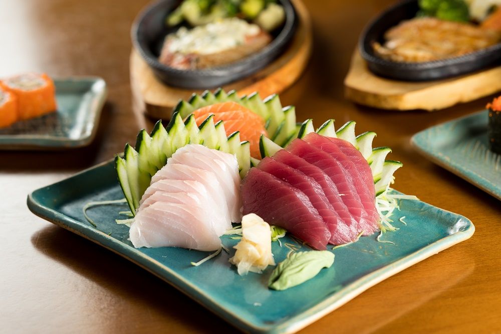
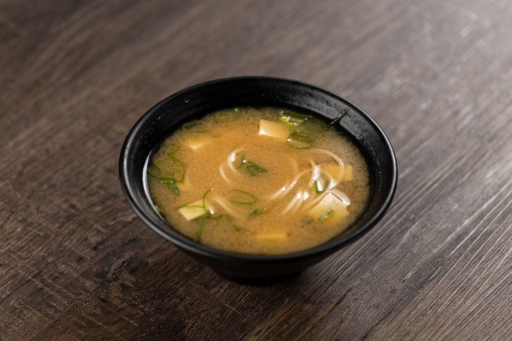

Sushi

Esta típica comida japonesa é um bolinho de arroz enrolado com uma alga. O sushi traz diferentes ingredientes em seu interior, entre eles frutos do mar, peixe e vegetais. Como a variedade de sushi é bem grande, a iguaria pode ganhar outros nomes dependendo do recheio escolhido. A título de curiosidade, a palavra sushi significa “é azedo”.
Sashimi
O prato traz tiras finas de peixe cru, geralmente salmão, atum e outros peixes. Não é consumido com arroz, mas pode ser acompanhado de alga, molho shoyu e wasabi. Sashimi significa carne perfurada (sashi = perfurada + mi = carne).
Tempurá

De origem portuguesa, o tempurá se tornou um dos pratos clássicos da comida japonesa. A iguaria de massa fluida, feita à base de farinha de trigo e frita, pode ser composta apenas de legumes (cenoura, abóbora, berinjela, repolho, brócolis, entre outros) ou por frutos do mar, como camarão. Independentemente do recheio, o tempurá vem acompanhado de molho. O significado da palavra tempurá ainda é discutível. Porém, a mais comum vem do termo “tempora”, que significa “um período de tempo”, por conta da quaresma, período no qual os portugueses católicos não podem consumir carne vermelha.
Guioza

O guioza (ou gyoza) é um pastel frito ou cozinho no vapor. É feito com uma massa bem fina com recheio de carne de porco moída ou legumes (repolho e cebolinha). O guioza geralmente é servido com molho shoyu. Dizem que, na verdade, o prato é originalmente chinês.
Temaki

Este cone feito de algas secas e crocantes caiu definitivamente no gosto dos brasileiros. Ele pode trazer os mais diferentes recheios, porém os mais comuns são atum, pepino, kani e salmão cru ou grelhado, todos com arroz. Para acompanhar, molho shoyu. Temaki é um tipo de sushi, sendo que “te” significa “mão” e “maki”, “enrolado”.
Missoshiru
Servida quente, antes do prato principal ou no café da manhã, a missoshiru é uma sopa feita à base de pasta de soja, dashi (caldo de peixe) e tofu. Algumas vezes pode conter legumes. A receita é servida em uma cumbuca, conhecida como ochawan. Missoshiru significa caldo de soja fermentada (misso é “soja fermentada” e shiru é “caldo”).